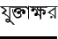

There are currently two Bengali fonts available with ITRANS: bwti and ItxBeng. The bwti fonts are written in METAFONT, while ItxBeng is a PostScript font. At present, the bwti fonts have a complete set of Bengali characters including all the standard conjunct consonants ( s), while the ItxBeng fonts are missing some characters. ItxBeng, however, works with the TEX, direct PostScript and HTML interfaces of ITRANS, while bwti is limited to only the TEX interface.
bwti is a family of METAFONT fonts defined in the files bnr10.mf and bnsl10.mf. They can be used only with the TEX interface.
These can be used at any font size in your document.
In this document the following line was used for
loading the font:
\newfont{\bnr}{bnr10 at 14pt}.
ItxBeng is a PostScript font whose specification is in the file itxbeng.pfa or itxbeng.pfb. It is a user-defined Type I PostScript font. Four styles, transformations on the basic ItxBeng font, are bundled with the itrans package. Their names (in the TEX interface) are itxbeng, itxbengo, itxbngrc, and itxbngre.
Since these are PostScript fonts, you can use them at any font size in your document. In this document the following line was used for loading the font:
\newfont{\itxbengf}{itxbeng at 15pt}.
This mode is provided for generating text that can be displayed on any WWW browser such as Netscape (version 3.0 or later). See the example file provided (ITRANS/doc/s1html.itx) on examples of how to use this mode. See the manual idoc.itx for information on the Direct Text Output mode of ITRANS.
The same IFM file (for ItxBeng) is used for this mode as for the TEX interface.
This interface does not offer any word-processing capabilities other than that of checking when a page is complete, and then resetting the current point to the top of the next page. Thus, all spaces, lines, etc from the input text appear in the output too.
The user may also directly invoke PostScript commands to create various versions of the font, as required. Refer to PostScript language manuals for specific help regarding the PostScript font manipulation commands. If you decide to go this route, take a look at the file itrans.pro, it is the prologue that gets sent to the printer. It contains definitions of various commands such as normalfont, slantfont, compressedfont, etc, which may be used to change the font being used. These PostScript functions take a single argument: the font size to use. All this and more information can be obtained from the prologue file, itrans.pro, and PostScript users should take a look at it. For example usage, look through the sample input files provided. Files ending in .ips are the direct PostScript input files, itrans (with the -P option) directly produces PostScript output for these files.
The file itxbeng.pfa contains the PostScript language program for this bengali font.
The bwti fonts have been created by Abhijit Das of IISc Bangalore.
The ItxBeng has been developed by Shrikrishna Patil, who has been developing fonts for over a decade now. He has been extremely generous to all of us users of ITRANS, and has offered us two freeware fonts: one for Gujarati (ItxGuj), and one for Bengali (ItxBeng). I am thankful to him for this gift! If any one using this ITRANS package finds the need for fonts for Microsoft Windows or Apple Macintosh platforms, feel free to contact Patil at his e-mail address sapatil@pacbell.net. His fonts are available at very reasonable costs, around US$50 to US$100 depending on the font.
Each font requires an ITRANS Font Metric (IFM) file to be supplied in the ITRANS document. This Bengali user manual for ITRANS makes use of two IFM files, since it needs to print text in both the bwti and ItxBeng fonts.
The IFM file for bwti is called bnbeng.ifm.
I would like to thank Jaijeet Roychowdhury, who created a new IFM file for the bwti fonts and thus add support for them in ITRANS. He also helped fix some problems with the Bengali IFM files.
The IFM file is called itxbeng.ifm.
I would like to thank Ansuman Lahiri (ansu@thon.csb.ki.se), who helped in creating the IFM file for ItxBeng and in proof-reading the test samples I sent him. There may still be problems with the current Bengali support, but that is because I do not know bengali at all, so if you do find that some conjuncts do not work they should, please send me (Avinash Chopde) e-mail, my address is available elsewhere in this document.
2009-12-04
ITRANS Home Page: http://www.aczoom.com/itrans/